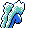

#243
Aurorus
RockIce
It makes ice walls with air chilled minus 240 degrees Its diamond-shaped crystals glow like an aurora
Base stats Total 422
HP123
Attack77
Defense72
Speed58
Special92
Details
- Species
- Tundra
- Height
- 8'10"
- Weight
- 496.0 lb
- Catch rate
- 45
- Base exp
- 104
- Growth
- Medium Fast
Level-up moves
LevelMoveType
StartGrowlNormal
StartPowder SnowIce
StartRock ThrowRock
StartAurora BeamIce
Lv 8Powder SnowIce
Lv 12Rock ThrowRock
Lv 18Aurora BeamIce
Lv 24Thunder WaveElectric
Lv 31Ice BeamIce
Lv 39Rock SlideRock
Lv 47BlizzardIce
Evolution
Evolves from Amaura
Where to find
Not found in the wild — evolve, trade or catch it elsewhere.
TM / HM
TM06 ToxicTM08 Body SlamTM09 Take DownTM10 Double-EdgeTM15 Hyper BeamTM13 Ice BeamTM14 BlizzardTM24 ThunderboltTM25 ThunderTM26 EarthquakeTM31 MimicTM32 Double TeamTM34 BideTM44 RestTM45 Thunder WaveTM48 Rock SlideTM50 Substitute